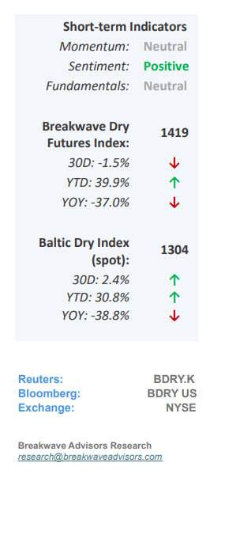
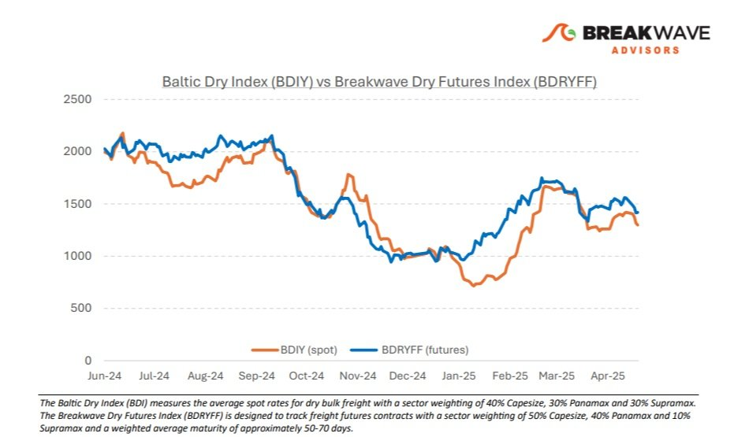
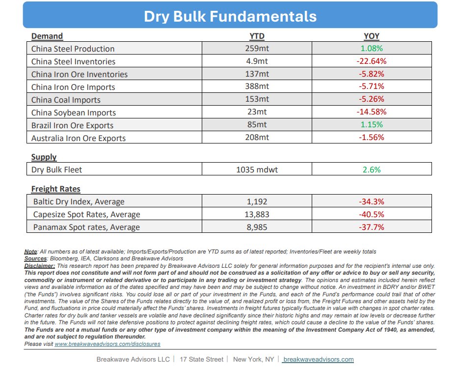

•Peak Trade War Behind Us, Dry Bulk Could See Higher US Exports– The recent announcement regardinga reset in trade relationsbetween the U.S. and China is apositive developmentfor the dry bulk shipping market. Firstly, the easing of tensions between the two largest economies hasimproved global growth sentiment. Secondly, the potentialincrease in U.S. dry bulk exports,particularly agricultural products and coal, could lead to marginally stronger demand for dry bulk shipping than previously anticipated. These factors are expected to support both spot rates and freight futures in the near term. That said,uncertainties remainregarding global dry bulk demand. Chinese coal imports and iron ore consumption, both heavily influenced by the country’s energy transition and subdued real estate activity, continue to be key variables. Nevertheless, on the margin, thistrade newsprovides awelcome boostto what has otherwise been a relatively uneventful month for the dry bulk market. Currently, freight futures remain in contango with elevated futures relative to spot rates. However, we anticipateincreased activityover the remainder of the month, which should help spot rates align more closely with the optimistic futures curve. In addition, seasonal trends also point to improved rates as we move into the summer months. Nonetheless, as we look further into mid-summer,weather conditionsmay begin to affect operations in the crucialWest African bauxitemarket, which in recent years has been a significant contributor to ton-mile growth for the Capesize segment.

•Weak Coal Volumes Remain a Significant Headwind for Dry Bulk– Coal has traditionally been the cornerstone of dry bulk demand. While iron ore dominates in terms of total volume, primarily under long-term contracts, coal remains the key driver of spot cargo activity, making it a significant variable in dry bulk market dynamics. So far this year,China’s coal imports have been notably weak, and this trend may persist for the rest of the year in the absence of weather-related disruptions (i.e. less hydro generation, weaker solar/wind). Although China continues to expand its coal-fired power generation capacity, the growthof renewable energy is outpacingthese additions, thereby gradually increasing the share of renewables in the national energy mix. Moreover, the rapid expansion ofbehind-the-meter solar capacity, much of which is not fully reflected in official energy statistics, is further reducing reliance on coal. As a result, many coal-fired power plants are operating atlow utilization ratesunder normal conditions, leading to decreased coal consumption. While temporary surges in coal demand may occur due to seasonal or exceptional factors, thelong-term outlookfor coal imports into China appearsuncertain, especially without a significant acceleration in economic growth beyond any current reasonable projections.
•Our Long-term View– The last few years have been characterized by increased geopolitical uncertainty. Going forward, we expect such events to continue to affect global trade and have a meaningful impact on effective vessel supply. Combined with the potential for a multi-year cyclical rebound in China’s economic activity following the recent economic turmoil, dry bulk shipping should experience higher volatility on top of a secular tightness driven by stable bulk commodity demand and a slower fleet growth owing to a relatively low orderbook.


Subscribe: